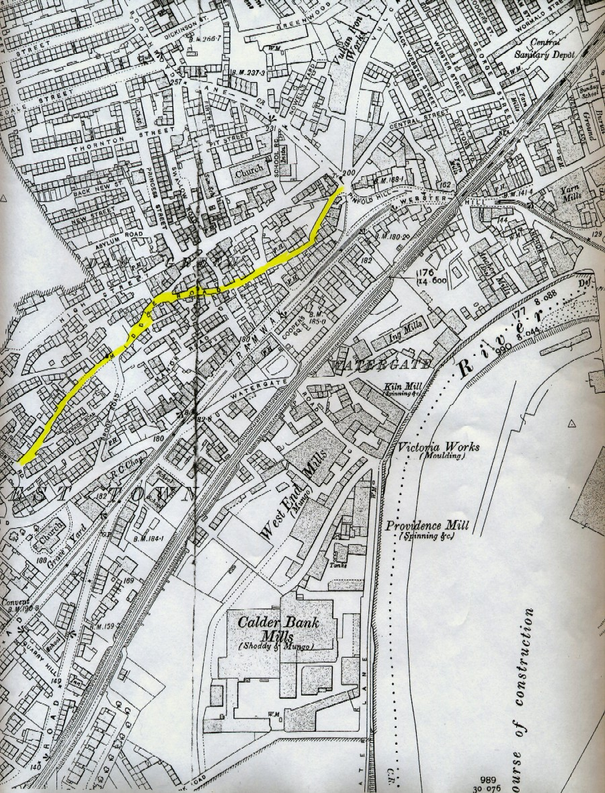

|
c1906 Map of All Saints Ward, Dewsbury, West Yorkshire
Dewsbury is a town in the West Riding of the county of York comprising the township of
Dewsbury and Batley, as well as portions of the township of Soothill (Upper and Lower),
Mirfield (Ravensthorpe), and Thornhill (Thornhill Lees and Savile Town) located
fivemiles west of Wakefield, and 27 miles southwest of York and 187 miles from London.
The charter of incorporation was granted in 1861. It was a station for the Manchester
and Leeds section of the London and North-Western railway, and was also connected with
the Lancashire and Yorkshire, and the Manchester, Sheffield, and Lincolnshire lines.
This parish in Saxon times was of vast extent, comprising nearly 400 square miles, and
was later very considerable, including the townships of Ossett-with-Gawthorpe, South
Ossett, Hartshead, Earl's Heaton, Batley Carr, and Hanging Heaton, together comprising
about 9,551 acres.

West Town, Dewsbury
c1906
|
The soil was fertile, resting on a substratum of carboniferous, limestone and coal,
which was extensively wrought. The town of Dewsbury is pleasantly situated at the base
of a hill by the river Calder, and was a place of great antiquity, though most of the
buildings were modern.
For several centuries the town had remained nearly stationary, but had greatly increased
in wealth and population, owing to its situation in the midst of a rich manufacturing
and mining district. The extension of the Calder and Hebble navigation, and the opening
of the several lines of railway, had brought it into connection with Liverpool,
Manchester, Leeds, Halifax, and Wakefield, and also with the river Humber. The cloth
and blanket hall was erected in 1837, and the Dewsbury Church Institute was established
in 1842. The inhabitants were chiefly employed in the manufacture of blankets, carpets,
worsted, and fine woollen cloth, for the fulling of which the water of the Calder was
reckoned peculiarly suitable. Many of the houses were well built and even spacious,
and the streets were paved and lighted with gas. The parish church was rebuilt in 1767.
There were district churches at West Town, Dewsbury Moor, Earls Heaton, Hanging Heaton,
Batley Carr, Hartshead-cum-Clifton, Ossett-cum-Gawthorpe, and South Ossett, all of which
were noticed under their respective heads. There were chapels for Wesleyans, New
Connection Methodists, Baptists, Independents, Roman Catholics, and Society of Friends.
There were several schools, a subscription library, and a mechanics' institute. The
market day was Thursday, but a provision market was also held on Saturday. There were
two annual fairs held in May and September.
|